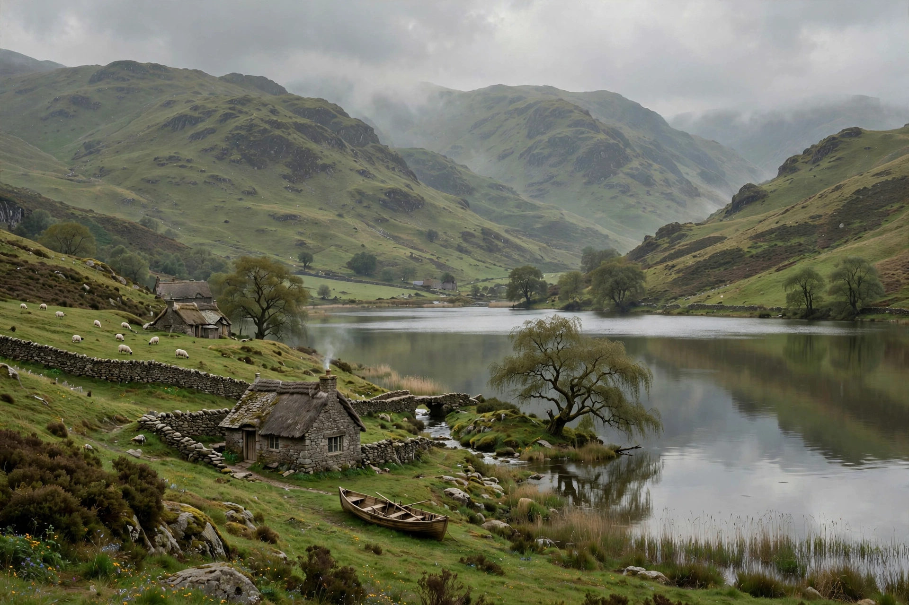

Lake Poets
| Lake Poets | |
|---|---|
 The Lake District, home of the Lake Poets | |
| Years active | c. 1798–1830s |
| Location | Lake District, Cumberland & Westmorland, England |
| Major figures | William Wordsworth, Samuel Taylor Coleridge, Robert Southey |
| Movement | Romanticism |
The Lake Poets were a group of English poets who all lived in the Lake District of England, United Kingdom, in the first half of the nineteenth century. As a group, they followed no single "school" of thought or literary practice then known. The group, so named only retrospectively, comprised William Wordsworth, Samuel Taylor Coleridge, and Robert Southey.
History
The name was coined, somewhat derisively, by the Edinburgh Review, whose critic Francis Jeffrey attacked the simplicity of their style and their rejection of Augustan conventions. Wordsworth and Coleridge had collaborated on Lyrical Ballads (1798), the landmark collection whose Preface (1800, expanded 1802) became a manifesto for English Romantic poetry, advocating "the real language of men" and the spontaneous overflow of powerful feelings. Southey, a prolific writer of verse epics and later Poet Laureate, settled at Greta Hall in Keswick, where Coleridge also lived for a time.
Associated figures
Writers associated with the group by residence or friendship included Dorothy Wordsworth, whose journals influenced her brother's poetry; Thomas De Quincey, who later lived in Wordsworth's former home, Dove Cottage at Grasmere; Charles Lamb; and the diarist John Wilson ("Christopher North"). Later generations of "Lakeland" writers are sometimes grouped with them, though the label properly belongs to the first generation.
Legacy
Once mocked for their rural subject matter, the Lake Poets came to be seen as central figures of English Romanticism. Their association with the Lake District helped make the region a focus of literary tourism that continues today, centred on Dove Cottage, Rydal Mount and Greta Hall.